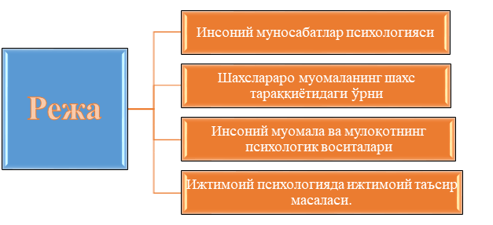

1-Режа. Инсоний муносабатлар психологияси
Шахс - ижтимоий муносабатлар маҳсули дейилишининг энг асосий сабаби - унинг доимо инсонлар даврасида, улар билан ўзаро таъсир доирасида бўлишини англатади. Бу шахснинг энг етакчи ва нуфузли фаолиятларидан бири мулоқот эканлигига ишора қилади. Мулоқотнинг тури ва шакллари турличадир. Масалан, бу фаолият бевосита «юзма-юз» бўлиши ёки у ёки бу техник воситалар (телефон, телеграф ва шунга ўхшаш) орқали амалга ошириладиган; бирор профессионал фаолият жараёнидаги амалий ёки дўстона бўлиши; субъект-субъект типли (диологик, шериклик) ёки субъект-объектли (монологик) бўлиши мумкин.
Инсоний муносабатлар шундай ўзаро таъсир жараёнларики, унда шахсларо муносабатлар шаклланади ва намоён бўлади. Бундай жараён дастлаб одамлар ўртасида рўй берадиган фикрлар, ҳис-кечинмалар, ташвишу - қувончлар алмашинувини назарда тутади. Одамлар мулоқотда бўлишгани сари, улар ўртасидаги муносабатлар тажрибаси ортган сари улар ўртасида умумийлик, ўхшашлик ва уйғунлик каби сифатлар пайдо бўладики, улар бир - бирларини бир қарашда тушунадиган ёки «яримта жумладан» ҳам фикр аён бўладиган бўлиб қолади, айрим холларда эса ана шундай мулоқотнинг тиғизлиги тескари реакцияларни - бир-биридан чарчаш, гапирадиган гапнинг қолмаслиги каби вазиятни келтириб чиқаради. Масалан, оила муҳити ва ундаги муносабатлар ана шундай тиғиз муносабатларга киради. Фақат бундай тиғизлик оиланинг барча аъзолари ўртасида эмас, унинг айрим аъзолари ўртасида бўлиши мумкин (она - бола, қайнона - келин ва х-зо).
Ўзаро муносабатларга киришаётган томонлар муносабатдан кўзлайдиган асосий мақсадлари - ўзаро тил топишиш, бир-бирини тушунишдир. Бу жараённинг мураккаблиги, керак бўлса, «жозибаси», бетакрорлиги шундаки, ўзаро бир хил тил топишиш ёки томонларнинг айнан бир хил ўйлашлари ва гапиришлари мумкин эмас. Агар ана шундай вазиятни тасаввур қиладиган бўлсак, бундай мулоқот энг самарасиз, энг бетаъсир бўлган бўлар эди. Масалан, тасаввур қилинг, узоқ вақт кўришмай қолган дўстингизни кўриб қолдингиз. Сиз ундан хол-аҳвол сўрадингиз, лекин у ташаббусни сизга бериб, нимаики деманг, сизни маъқуллаб, гапингизни қайтариб турибди.
Бундай мулоқот жуда бемаза бўлган ва сиз иккинчи марта ўша одам билан иложи борича расман салом - аликни бажо келтириб ўтиб кетаверган бўлардингиз. Яъни, мулоқот фаолияти шундай шарт-шароитки, унда ҳар бир шахснинг индивидуаллиги, бетакрорлиги, билимлар ва тасаввурларнинг хилма-хиллиги намоён бўлади ва шуниси билан у инсониятни асрлар давомида ўзига жалб этади.
Ҳар қандай фаолиятдан зерикиш, чарчаш мумкин, фақат одам мулоқотдан, айниқса, унинг норасмий самимий, бевосита шаклидан чарчамайди, яхши суҳбатдошлар доимо маънавий жиҳатдан рағбатлантириладилар.
ХХ1 асрда яшар эканмиз, одамнинг энг табиий бўлган мулоқотга эҳтиёжи, унинг сирларидан ҳабардор бўлиш ва ўзгаларга самарали таъсир эта олишга бўлган интилиши янада ошди ва бунинг қатор сабаблари бор. Биринчидан, индустриал жамиятдан ахборотлар жамиятига ўтиб бормоқдамиз. Ахборотларнинг кўплиги айнан инсон манфаатига алоқадор маълумотларни саралаш, у билан тўғри муносабатда бўлишни тақозо этди.
Ахборот ХХI асрда энг нодир капиталга айланди ва бу ўз навбатида инсонларга зарур ахборотлар узатилиши тезлиги ва темпини ўзгартиради. Иккинчидан, турли касб-фаолият соҳасида ишлаётган одамлар гуруҳининг кўпайиши, улар ўртасида муносабатлар ва алоқаниннг долзарблиги ахборотлар тиғиз шароитда оддийгина мулоқотни эмас, балки профессионал, билимдонлик асосидаги мулоқотни талаб қилади.
Умуман, ХХI асрнинг корпорациялар асри деб, башорат қилаётган иқтисодчилар ҳам бу корпорация инсонларнинг ўзаро тил топишларига қаратилган малакаларнинг ривожланган, мукаммал бўлиши ҳақида гапирмоқдалар. Ундан ташқари, бу каби корпоратив алоқа кўп холларда бевосита юзма-юз эмас, балки замонавий техник воситалар - уяли алоқа, факслар, электрон почта, Интернет кабилар ёрдамида аниқ ва лунда фикрларни узатишни назарда тутади. Бу ҳам ўзига хос мулоқот малакаларининг атайлаб шакллантирилишини тақозо этади. Учинчидан, охирги пайтларда шундай касб-ҳунарлар сони ортдики, улар социономик гуруҳ касблар деб аталиб, уларда «одам-одам» диалоги фаолиятнинг самарасини белгилайди. Масалан, педагогик фаолият, бошқарув тизими, турли хил хизматлар (сервис), маркетинг ва бошқалар шулар жумласидандир. Бундай шароитларда одамларнинг атайлаб мулоқот билимдонлигининг оширилиши меҳнат маҳсулиини белгилайди.
Шунинг учун ҳам мулоқот, унинг табиати, техникаси ва стратегияси, мулоқотга ўргатиш (социал психологик тренинг) масалалари билан шуғулланувчи фанларнинг ҳам жамиятдаги ўрни ва салоҳияти кескин ошди.
2-Режа. Шахслараро муомаланинг шахс тараққиётидаги ўрни
Аслида ҳар бир инсоннинг ижтимоий тажрибаси, унинг инсоний киёфаси, фазилатлари, ҳаттоки, нуксонлари ҳам мулоқот жараёнларининг маҳсулидир. Жамиятдан ажралган, мулоқотда бўлиш имкониятидан маҳрум бўлган одам ўзида индивид сифатларини сақлаб қолиши мумкин, лекин у шахс бўлолмайди.
Шунинг учун мулоқотнинг шахс тараққиётидаги аҳамиятини тасаввур қилиш учун унинг функцияларини таҳлил қиламиз.
Ҳар қандай мулоқотнинг энг элементар функцияси - суҳбатдошларнинг ўзаро бир-бирини тушунишларини таъминлашдир. Бу ўзбекларда самимий салом-алик, очиқ юз билан кутиб олишдан бошланади.
Ўзбек ҳалкининг энг нодир ва буюк хислатларидан бири ҳам шуки, уйига биров кириб келса, албатта очиқ юз билан кутиб олади, кўришади, сўрашади, хол-ахвол сўрайди. Шуниси характерлики, таъзияга борган чоғда ҳам ана шундай самимиятли қабулни ҳис қиламиз. Бу каби бирламчи контакт усуллари бошқа миллат ва ҳалкларда ҳам бор, яъни бу жиҳат миллий ўзига хосликка эга. Унинг иккинчи муҳим функцияси ижтимоий тажрибага асос солишдир.
Одам боласи фақат одамлар даврасида ижтимоийлашади, ўзига зарур инсоний хусусиятларни шакллантиради. Одам боласининг йиртқич ҳайвонлар томонидан ўғриланиб кетилиши, сўнг маълум муддатдан кейин яна одамлар орасида пайдо бўлиши фактлари шуни кўрсатганки, «мауглилар» биологик мавжудот сифатида ривожланаверади, лекин ижтимоийлашувда ортда қолиб кетади. Бундан ташқари, бундай ҳолат боладаги билиш қобилиятларини ҳам чеклаши кўплаб психологик экспериментларда ўз исботини топди. Мулоқотнинг яна бир муҳим вазифаси - у одамни у ёки бу фаолиятга ҳозирлайди, руҳлантиради.
Одамлар гуруҳидан узоқлашган, улар назаридан қолган одамнинг қўли ишга ҳам бормайди, борса ҳам жамиятга эмас, балки фақат ўзигагина манфаат келтирадиган ишларни қилиши мумкин. Масалан, кўплаб тадқиқотларда изоляция, яъни одамни ёлғизлатиб қўйишнинг унинг руҳиятига таъсири ўрганилган. Масалан, узоқ вақт термокамерада бўлган одамда идрок, тафаккур, хотира, ҳиссий ҳолатларнинг бузилиши қайд этилган. Лекин атайлаб эмас, тақдир тақозоси билан ёлғизликка маҳкум этилган одамларнинг мақсадли фаолиятлар билан ўзларини банд этишлари у қадар катта салбий ўзгаришларга олиб келмаслигини ҳам олимлар ўрганишган.
Лекин барибир ҳар қандай ёлғизлик ва мулоқотнинг етишмаслиги одамда мувозанатсизлик, ҳиссиётга берилувчанлик, ҳадиксираш, ҳавотирланиш, ўзига ишончсизлик, қайғу, ташвиш ҳисларини келтириб чиқаради. Шуниси қизиқки, ёлғизликка маҳкум бўлганлар маълум вақт ўтгач овоз чиқариб, гапира бошлашаркан. Бу аввал бирор кўрган ёки ҳис қилаётган нарсаси хусусидаги гаплар бўлса, кейинчалик нимагадир қараб гапиравериш эҳтиёжи пайдо бўлар экан. Масалан, бир М.Сифр деган олим илмий мақсадларини амалга ошириш учун 63 кун ғор ичида яшаган экан. Унинг кейинчалик ёзишича, бир неча кун ўтгач, у турган ерда бир ўргимчакни ушлаб олади ва у билан диалог бошланади. «Биз, деб ёзади у, шу ҳаётсиз ғор ичидаги танхо тирик мавжудотлар эдик. Мен ўргимчак билан гаплаша бошладим, унинг тақдири учун қайғура бошладим...»
Шахснинг мулоқотга бўлган эҳтиёжининг тўла қондирилиши унинг иш фаолиятига ҳам таъсир кўрсатади. Одамлар, уларнинг борлиги, шу муҳитда ўзаро гаплашиш имкониятининг мавжудлиги факти кўпинча одамни ишлаш қобилиятини ҳам ошираркан, айникса, гаплашиб ўтириб қилинадиган ишлар, биргаликда ёнма-ён туриб бажариладиган операцияларда одамлар ўз олдида турган ҳамкасбига қараб кўпроқ, тезроқ ишлашга куч ва қўшимча ирода топади. Тўғри, бу ҳамкорликда ўша ёнидаги одам унга ёқса, улар ўртасида ўзаро симпатия ҳисси бўлса, унда одам ишга «байрамга келгандай» келадиган бўлиб қолади. Шунинг учун ҳам америкалик социолог ҳамда психолог Жон Морено асримиз бошидаёқ ана шу омилнинг унумдорликка бевосита таъсирини ўрганиб, социометрик технологияни, яъни сўровнома асосида бир-бирини ёқтирган ва бир-бирини инкор қилувчиларни аниқлаган ва социометрия методикасига асос солган эди.
Шундай қилиб, мулоқот одамларнинг жамиятда ўзаро ҳамкорликдаги фаолиятларининг ички психологик механизмини ташкил этади. Қолаверса, ҳозирги янги демократик муносабатлар шароитида турли ишлаб чиқариш қарорларини якка тартибда эмас, балки коллегиал - биргаликда чиқариш эҳтиёжи пайдо бўлганлигини ҳисобга олсак, одамларнинг муомала маданияти ва мулокат техникаси меҳнат унумдорлиги ва самарадорликнинг муҳим омилларидандир.
3-Режа. Инсоний муомала ва мулоқотнинг психологик воситалари
Ижтимоий психологияда психологик таъсирнинг асосан уч воситаси фарқланади.
1. Вербал таъсир - бу сўз ва нутқимиз орқали кўрсатадиган таъсиримиздир. Бундаги асосий воситалар сўзлардир. Маълумки, нутқ - бу сўзлашув, ўзаро муомала жараёни бўлиб, унинг воситаси - сўзлар ҳисобланади. Монологик нутқда ҳам, диалогик нутқда ҳам одам ўзидаги барча сўзлар заҳирасидан фойдаланиб, энг таъсирчан сўзларни топиб, шеригига таъсир кўрсатишни хоҳлайди.
2. Паралингвистик таъсир - бу нутқнинг атрофидаги нутқни безовчи, уни кучайтирувчи ёки сусайтирувчи омиллар. Бунга нутқнинг баланд ёки паст товушда ифодаланаётганлиги, артикуляция, товушлар, тўхташлар, дудуқланиш, йўтал, тил билан амалга ошириладиган ҳаракатлар, нидолар киради. Шунга қараб, масалан, дўстимиз бизга бирор нарсани ваъда бераётган бўлса, биз унинг қай даражада самимийлигини билиб оламиз. Куйиб - пишиб, очиқ юз ва дадил овоз билан «Албатта бажараман!», деса ишонамиз, албатта.
3. Новербал таъсирнинг маъноси «нутқсиз» дир. Бунга суҳбатдошларнинг фазода бир-бирларига нисбатан тутган ўринлари, ҳолатлари (яқин, узоқ, интим), қилиқлари, мимика, пантомимика, қарашлар, бир-бирини бевосита ҳис қилишлар, ташқи қиёфа, ундан чиқаётган турли сигналлар (шовқин, хидлар) киради. Уларнинг барчаси мулоқот жараёнини янада кучайтириб, суҳбатдошларнинг бир-бирларини яхшироқ билиб олишларига ёрдам беради.
Масалан, агар учрашувнинг дастлабки дақиқаларида ўртоғингиз сизга қарамай, атрофга аланглаб, «Кўрганимдан бирам хурсандман», деса, ишонасизми? Мулоқот жараёнидаги характерли нарса шундаки, суҳбатдошлар бир - бирларига таъсир кўрсатмоқчи бўлишганда, даставвал нима дейиш, қандай сўзлар воситасида таъсир этишни ўйлар экан. Аслида эса, ўша сўзлар ва улар атрофидаги ҳаракатлар муҳим рол ўйнаркан. Масалан, машҳур америкалик олим Меграбян формуласига кўра, биринчи марта кўришиб турган суҳбатдошлардаги таассуротларнинг ижобий бўлишига гапирган гаплари 7%, паралингвистик омиллар 38%, ва новербал ҳаракатлар 58% гача таъсир қиларкан.
Кейинчалик бу муносабат ўзгариши мумкин албатта, лекин ҳалқ ичида юрган бир мақол тўғри: «Уст-бошга қараб кутиб олишади, ақлга қараб кузатишади» Мулоқотнинг қандай кечиши ва кимнинг кўпроқ таъсирга эга бўлиши шерикларнинг ролларига ҳам боғлиқ. Таъсирнинг ташаббускори - бу шундай шерикки, унда атайлаб таъсир кўрсатиш мақсади бўлади ва у бу мақсадни амалга ошириш учун барча юқорида таъкидланган воситалардан фойдалади. Агар бошлиқ иши тушиб, бирор ходимни хонасига таклиф этса, у ўрнидан туриб кутиб олади, илтифот кўрсатади, хол-аҳволни ҳам қуюқроқ сўрайди ва сўнгра гапнинг асосий қисмига ўтади.
Таъсирнинг адресати - таъсир йўналтирилган шахс. Лекин ташаббускорнинг суҳбатга тайёргарлиги яхши бўлмаса, ёки адресат тажрибалирок шерик бўлса, у ташаббусни ўз қўлига олиши ва таъсир кучини қайта эгасига қайтариши мумкин бўлади.
4-Режа Ижтимоий психологияда ижтимоий таъсир масаласи.
Охирги йилларда «профессионализм» тушунчаси тез-тез ишлатиладиган бўлиб қолди. Чунки жамиятда туб ислоҳотларни амалга ошириш, меҳнат унумдорлигини «инсон омили» ни такомиллаштириш ҳисобига ошириш давр талаби бўлиб қолди. Айниқса, одамларни бошқариш соҳасидаги профессионализмга катта эътибор қаратилмоқда.
Жуда кўпчилик мутахассислар барча бажарадиган функциялари орасида одамлар билан тил топишиш, уларга таъсир кўрсатиш, улар фаолиятини тўғри ташкил қилиш ва бошқариш энг мураккабларидан эканлигини эътироф этмоқдалар.
Одамлар билан нормал муносабатларни ўрната олмаслик, айниқса, бизнес соҳасида амалий шерикларнинг ҳолатлари, кутишларини аниқлай олмаслик, ўз нуқтаи назарига ўзгаларни профессионал тарзда кўндира олмаслик, «биров» ни, унинг ички кечинмалари ва ўзига бўлган муносабатини аниқ тасаввур қила олмаслик амалий психологияда коммуникатив уқувсизлик, ёки дискоммуникация ҳолатини келтириб чиқаради.
Бунда одамлар оддий тил билан айтганда, бир - бирларини тушунолмай қоладилар, шунинг оқибатида пишиб турган лойиҳа ёки яхши режа амалга ошмаслиги, бир неча ойларга чўзилиб кетиши мумкин. Шунинг учун ҳам ҳозирги замон ижтимоий психологиясининг тадбиқий йўналишида, бошқарув психологиясида катта ёшли одамларни коммуникатив билимдонликка ўргатиш, уларда зарур коммуникатив малакаларни ҳосил қилишга катта аҳамият берилмоқда.
Ҳар бир корхона, хусусий фирма ёки давлат муассасасини бошқарувчи менежер, раҳбар тайёрлаш муаммоси ана шу раҳбарларни, бошқарувчиларни психологик жиҳатдан одамлар билан ишлашга ўргатиш муаммосини четлаб ўтолмайди. Умуман, ҳозирги даврда ҳар қандай мутахассис - врач, муҳандис, ўқитувчи, иқтисодчи, агроном, қурувчи, журналист, маданиятшунос ёки бошқалар ҳам коммуникатив малакаларга эга бўлмагунча, бозор муносабатлари шароитида тезда жамоага киришиб, кўпчилик билан тил топишиб, ўз профессионал маҳоратини кўрсата олмайди. Ҳар бир зиёли инсон бошқалар билан ҳамкорлик қилиш маҳорати ва санъатига эга бўлиши керак. Бу вазифа одамларни муомала ва мулоқот этикасига ўргатишни ҳар қачонгидан ҳам долзарб қилиб қўймоқда.
Тўғри, мулоқотга киришиш - ижтимоийлашув жараёнида барча сифатлардан олдинроқ шаклланадиган қобилиятлардан, у табиий ва ҳаётий нарса. Бола тили жуда яхши чиқиб улгурмай, атрофидагилар билан актив мулоқотга кириша бошлайди. Лекин масаланинг парадоксал томони ҳам шундаки, йиллар ўтган сари онгли, ақлли одам ҳар бир гапини уйлаб гапирадиган, ҳар бир қадамини уйлаб босадиган бўлиб қолади, бу унинг жамиятдаги мавқесини белгиловчи воситадир.
Бу мулоқотга киришишга руҳан тайёрланишнинг аҳамиятини ҳам одам англашини тақозо этади. Шундай қилиб, ана шу энг табиий ва бир қарашда оддий инсон фаолияти шу қадар мураккаб ва серқирраки, унинг механизмларини ўрганиш, гуруҳларда тўғри муносабатларни ташкил этиш ва одамларни самарали мулоқотга ўргатиш муаммоси бугунги ижтимоий психологиянинг муҳим масалаларидандир.
Маълумки, гаплашаётган одамлар бири гапиради, иккинчиси тинглайди, эшитади. Мулоқотнинг самарадорлиги ана шу икки қирранинг қанчалик ўзаро мослиги, бир-бирини тўлдиришига боғлиқ экан. Нотўғри тасаввурлардан бири шуки, одамни муомала ёки мулоқотга ўргатганда, уни фақат гапиришга, мантиқан асосланган сўзлардан фойдаланиб, таъсирчан гапиришга ўргатишади. Унинг иккинчи томони - тинглаш қобилиятига деярли эътибор берилмайди. Машхур америкалик нотиқ, психолог Дейл Карнеги «Яхши суҳбатдош - яхши гапиришни биладиган эмас, балки яхши тинглашни биладиган суҳбатдошдир» деганда айнан шу қобилиятларнинг инсонларда ривожланган бўлишини назарда тутган эди.
Мутахассисларнинг аниқлашларича, ишлаётган одамлар вақтининг 45%и тинглаш жараёнига кетар экан, одамлар билан доимий мулоқотда бўладиганлар 35 - 40 % ойлик маошларини одамларни «тинглаганлари» учун оларканлар. Бундан шундай хулоса келиб чиқадики, коммуникациянинг энг қийин соҳаларидан ҳисобланган тинглаш қобилияти одамга кўпроқ фойда келтираркан.
Шунинг учун бўлса керак, немис файласуфи А. Шопенгауэр «Одамларни ўзингиз тўғрингизда яхши фикрга эга бўлишларини хохласангиз, уларни тингланг» деб ёзган экан. Дарҳақиқат, агар сиз куюниб гапирсангизу, суҳбатдошингиз сизни тингламаса, бошқа нарса билан овора бўлаверса, ундан ранжийсиз, нафақат ранжийсиз, балки у билан алоқани ҳам узасиз. Ўқитувчи гапираётган пайтда уни тингламаслик одобсизликнинг энг кенг тарқалган кўриниши деб баҳоланишини биласизми? Нима учун биз кўпинча яхши гапирувчи, сўзловчи бўла оламиз-у, яхши тингловчи бўла олмаймиз? Психологларнинг фикрича, асосий ҳалақит берувчи нарса - бу бизнинг ўз фикр-ўйларимиз ва хоҳишларимиз оғушида бўлиб қолишимиздир. Шунинг учун ҳам баъзан расман шеригимизни тинглаётгандай бўламиз, лекин аслида ҳаёлимиз бошқа ерда бўлади. Тинглашнинг ҳам худди гапиришга ўхшаш техникаси, усуллари мавжуд. Уларнинг тури ҳам кўп, лекин асосан биз кундалик ҳаётда унинг икки усулини қўллаймиз: сўзма - сўз қайтариш ва бошқача талқин этиш. Биринчиси, суҳбатдош сўзларининг бир қисмини ёки яхлитича қайтариш орқали, шерикни қўллаб-қувватлашни билдиради.
Иккинчи усул эса - шеригимиз сўзларини тинглаб, ундаги асосий ғояни мухтасар, ўзимизнинг талқинимизда ифода этиш. Иккала усул ҳам шерик учун муҳим, чунки у сизнинг тинглаётганингизни, ҳаттоки, ундаги ғояларга қарши эмаслигингизни билдиради. Бундай ташқари, биз яхши тинглаётган бўлиб, «Йўғ-э?», «Нахотки?», «Қара-я?», «Яша!» луқмалари билан ҳам суҳбатдошимизни гапиришга, янаям ўз фикрларини ойдинлаштиришга чақириб турамиз.
Демак, аслида биздаги гапираётган шахс етакчи, у суҳбатнинг мутлоқ хокими, деган тасаввур унчалик тўғри эмас. Яхши тинглашда ҳам шундай куч борки, у суҳбатдошни
Сизга жуда яқинлаштиради, ишончни туғдиради. Чунки мулоқот жараёнидаги энг қимматли нарса - бу ахборотнинг ўзи. Тинглаётган одам маънили, яхши диалогдан фақат яхши, фойдали маълумот олади. Гапирган эса аксинча, ўзидаги борини бериб, гапирмайдиган суҳбатдошдан «тескари алоқани» олиб улгурмай, ҳеч нарсасиз қолиши ҳам мумкин. Шунинг учун мулоқотга ўргатишнинг муҳим йўналишларидан бири - одамларни фаол тинглашга, бунда барча паралингвистик ва новербал омиллардан ўринли фойдаланишга ўргатишдир.
Профессионал тинглаш техникасига қуйидагилар киради:
◼ актив ҳолат. Бу - агар кресло ёки диван каби мебель бўлса, унга бемалол ястаниб ёки ётиб олмаслик, суҳбатдошнинг юзидан ташқари жойларига қарамаслик, мимика, бош чайқаш каби ҳаракатлар билан унинг ҳар бир сўзига қизиқаётганлигингизни билдиришни назарда тутади;
◼ суҳбатдошга самимий қизиқиш билдириш. Бу нафақат суҳбатдошни ўзига жалб қилиб, балки кейин навбат келганда ўзининг ҳар бир сўзига уни ҳам кўндиришнинг самарали йўлидир.
◼ ўйчан жимлик. Бу суҳбатдош гапираётган пайтда юзда масъулият билан тинглаётгандай тасаввур қолдириш орқали ўзингизнинг суҳбатдан манфаатдорлигингизни билдириш йўли. Агар биз суҳбатдошимизни яхши, диққат билан тингласак, бу билан биз унда ўз-ўзига ҳурматни ҳам тарбиялаймиз.
Демак, тинглаш жараёни кўпчилик тасаввур қилгани каби унчалик пассив жараён эмас экан. Унинг мулоқотнинг самарали бўлишидаги аҳамияти ниҳоятда катта. Чунки тинглаш қобилияти гапирувчини илҳомлантиради, уни руҳлантиради, янги фикрлар, ғояларнинг шаклланишига шароит яратади.
Шунинг учун маърузачи профессорнинг ҳар бир чиқиши ва маърузаси агар талабалар томонидан диққат билан тингланса, бу педагогик мулоқотдан иккала томон ҳам тенг ютади. Агар мулоқот жараёнида иштирок этувчи икки жараён - гапириш ва тинглашнинг фаол ўзаро таъсир учун тенг аҳамиятини назарда тутсак, бу жараён катнашчиларининг психологик саводхонлиги ва мулоқот техникасини эгаллашининг аҳамиятини англаш қийин бўлмайди.
Шунинг учун ҳам ижтимоий психологияда одамларни самарали мулоқотга атайлаб ўргатишга жуда катта эътибор берилади. Бу борадаги фаннинг ўз услуби бўлиб, унинг номи ижтимоий психологик тренинг (ИПТ) деб аталади. ИПТ - мулоқот жараёнига одамларни психологик жиҳатдан ҳозирлаш, уларда зарур коммуникатив малакаларни махсус дастурлар доирасида қисқа фурсатда шакллантиришдир. Энг муҳими ИПТ мобайнида одамларнинг мулоқот борасидаги билимдонлиги ортади. Амалий мулоқот тренинги - ИПТнинг бир кўриниши бўлиб, у ёки бу профессионал фаолиятни амалга ошириш жараёнида зарур бўладиган коммуникатив малака, кўникма ва билимларни ҳосил қилишга қаратилган тадбирдир.
Гуруҳ ва жамоаларда мулоқот тренинги воситасида музокаралар олиб бориш, иш юзасидан ҳамкорлик қилиш йўл-йўриқларини биргаликда топиш, катта аудитория олдида сўзлашга ўргатиш, мажлислар ўтказиш, жанжалли, низоли ҳолатларда ўзини тўғри тутиш малакалари ҳосил қилинади. Бундаги асосий нарса - тренинг катнашчилари онгига бировларни тушуниш, ўзини ўзга ўрнига қўя олиш, бошқалар манфаатлари билан ўзиникини уйгунлаштира олиш ғоясини сингдиришдир. Тренинглар мобайнида гуруҳий мунозаралар, ролли ўйинларнинг энг оптимал вариантлари синаб, машқ қилинади.
Ижтимоий психологияда таъсир воситклари айнан мулоқотнинг ўзига хос томонлари асосида амалга ошрилади.
Мулоқотнинг интерактив томони
Мулоқотнинг бу хусусияти кишиларнинг мулоқот жараёнида биргаликдаги фаолиятда бир-бирларига амалий жиҳатдан бевосита таъсир этишларинн таъминлайди. Шу туфайли одамлар ҳамкорликда ишлаш, бирбирларига ёрдам бериш, бир-бирларидан ўрганиш, ҳаракатлар мувофиқлигига эришиш каби қатор қобилиятларини намоён этишлари мумкин. Шу туфайли ўқитувчи бола шахсига мақсадга йўналган ҳолда таъсир кўрсатиши мумкин.
Аслини олганда, ҳар қандай мулоқот, агар у бемаъни, мақсадсиз, қуруқ гаплардан иборат бўлмаса, доимо мулоқотга киришувчиларнинг хулқ-атворларини, уларнинг установкаларини ўзгартириш имкониятига эга. Жамият миқёсида оладиган бўлсак, одамларнинг турли шароитларда ўзларини тутишлари, хулқ-атворларининг бошқарилиши маълум психологик қонуниятларга боғлиқлигини кўриш мумкин.
Бунга сабаб жамиятда қабул қилинган турли нормалар, қонун-қоидалардир. Чунки, ўзаро мулоқот ва ўзаро таъсир жараёнларида шундай ҳатти-ҳаракатлар образлари кишилар онгига сингиб борадики, уларни ҳар бир киши норма сифатида қабул қилади. Масалан, ўсмир бола, умуман ёшлар жамоат жойларида катталарга ўрин бўшатиб беришлари кераклиги ҳам хулқатворнинг бир нормаси.
Шу нормага амал қилиш ёки қилмаслик ижтимоий назорат тизими орқали бошқарилади. Яъни, юқоридаги шароитда агар ўсмир бола автобусда қарияга жой бўшатмаса, жамоатчилик ўша заҳоти уни ижтимоий тартибга чақиради.
Демак, ҳар бир шахс турли шароитларда турлича ролларни бажаради, бу ролларнинг қандай бажарилаётганлиги, одамларнинг кутишларига мос келишлиги ижтимоий назорат тизими орқали кузатиб турилади. Шунинг учун ҳам мулоқотга киришган кишилар доимо ўз хулқ-атворларини, қолаверса, ўзгаларнинг хулқ-атворини назорат қилиб, ҳаракатларда бир-бирларига мослашадилар. Лекин гоҳида шахсдаги ролларнинг кўп бўлиши ролларнинг зиддиятига олиб келиши мумкин. Масалан, мактаб ўқитувчисининг ўзи ўқитаётган синфда фарзанди бўлса, дарс пайтида шундай зиддиятни бошдан кечириши мумкин, яъни бир вақтнинг ўзида ҳам ота ёки она, ҳам ўқитувчи ролини бажаришга мажбур бўлади.
Ёки хулқи ёмон ўқувчининг уйига келган ўқитувчи бир вақтнинг ўзида ҳам ўқитувчи, ҳам меҳмон роллари ўртасида қийналади. Турли ролларни бажараётган шахсларнинг ўзаро мулоқотлари кутишлар тизими орқали бошқарилади. Масалан, хоҳлайдими ёки хоҳламайдими, ўқитувчидан маълум ҳаракатларни кутишадики, улар ўқитувчи ролига зид бўлмаслиги керак. Ўз ролларига мос ҳаракат қилган, доимо меъёр мезонида иш тутган кишининг ҳаракатлари одобли ҳаракатлар деб аталади. Масалан, ўқитувчининг одоби, ўз касбини устаси эканлиги, болалар қалбини тушуна олиши, уларнинг ёш ва индивидуал хусусиятларини ҳисобга олган ҳолда иш тутиши унинг одобга эга эканлигининг белгисидир.
Одобсиз одам эса бунинг аксидир. Демак, ўзаро мулоқот жараёнида бир одам иккинчи одамга психологик таъсир кўрсатади. Бу таъсир иккала томондан ҳам англаниши ёки англанмаслиги мумкин. Яъни, баъзан биз нима учун бир шахснинг бизга нақадар кучли таъсирга эга эканлигини, бошқа бири эса, аксинча, ҳеч қандай таъсир кучига эга эмаслигини тушуниб етмаймиз. Бу эса педагогикада муҳим муаммодир.
Ҳар бир педагогнинг ўз таъсир услублари ва таъсир кучи бўлади. Ўқитувчи шахсининг болаларга таъсири қуйидаги экспериментда жуда яққол кузатилган. Бошланғич синф ўқувчиларига анчагина ўйинчоқлар бериб, шуларнинг ичида фақат биттасига, қизил ёғоч ўйинчоққа тегмаслик айтилган. Болалар ёлғиз қолдирилиб, ҳаракатлари пинхона кузатилган. Жуда кўп болалар тақиқланган ўйинчоққа барибир тегишган.
Экспериментнинг иккинчи сериясида эса энди барча уйинчоққа тегиш мумкин-у, фақат қизил қутичанинг қопқоғини очиш мумкин эмас, деб айтилган. Шу қутича тепасига эса шу болаларнинг ўқитувчиси сурати илиб қўйишган. Бу серияда биринчисига қараганда “таъқиқни бузувчилар" сони кескин камайган.
Демак, бу нарса ўқитувчи шахсининг бола ҳаракатларига таъсирини яққол исботлаб турибди. Шахслараро таъсир ҳақида гап кетганда, ўқитувчи обрўйининг роли ҳақида ҳам айтиш лозим. Чунки, обрўли одам доимо ўша обрў қозонган гуруҳида ўз мавқеига ва таъсирига эга бўлади. Шахс обрўйи унинг бошқа шахсларга иродавий ва эмоционал таъсир кўрсата олиш қобилиятидир.
Маълумки, обрў амал ёки ҳаётий тажриба билангина орттирилмай, унинг ҳақиқий асоси - шахснинг одамлар билан тўғри муносабати, ундаги одамийлик хислатларининг, бошқа ижобий хислатларининг уйғунлашувидадир. Психологик обрў - таъсир кўрсатишнинг энг муҳим мезонидир.
Мулоқотнинг перцептив томони
Мулоқот жараёнида одамлар бир-бирлари билан маълумотлар алмашиб, ўзаро таъсир кўрсатибгина қолмай, балки бир-бирларини тўғрироқ ва аниқроқ англашга, тушунишга ва идрок қилишга ҳаракат қиладилар. Бу томон шахсий идрок ва тушуниш муаммоси билан боғлиқдир. Биргаликдаги фаолият жараёнида шахсларнииг бир-бирларини тўғри тушунишлари на аниқ идрок қилишлари мулоқотнинг самарали бўлишини таъминлайди.
Рус психологи А.А. Бодалев бошчилигидаги лаборатория бир-бирларини идрок қилиш механизмларини аниқлаш борасида қатор психологик қонуниятларни кузатган. Бундай механизмларга:
o идентификация;
o рефлексия;
o стереотипизация киради.
Идентификация шундай психологик ҳодисаки, бунда суҳбатдошлар бир-бирларини тўғрироқ идрок қилиш учун ўзларини бир-бирларининг ўрнига қўйиб кўришга ҳаракат қиладилар. Яъни, ўзидаги билимлар, тасаввурлар, ҳислатлар орқали бошқа бировни тушунишга ҳаракат қилиш, ўзини биров билан солиштириш (онгли ёки онгсиз) идентификациядир. Масалан, биринчи марта учрашувга кетаётган йигитнинг ички ҳолатини унинг ўртоғи ёки акаси тушуниши мумкин.
Рефлекция мулоқот жараёнида суҳбатдошнинг позициясидан, холатидан туриб, ўзини тасаввур қилишдир, яъни рефлекция, бошқа одамнинг идрокига тааллуқли бўлиб ўзига бировнинг кўзи билан қарашга интилишдир. Чунки, бусиз одам мулоқот жараёнида ўзини аниқ билмаслиги, нотўғри мулоқот формаларини танлаши мумкин.
Стереотипизация одамлар онгида мулоқотлар мобайнида шаклланиб ўрнашиб қолган кўникиб қолинган образлардан шаблон сифатида фойдаланиш ҳолларидир. Ижтимоий стереотиплар ҳар бир шахсда у ёки бу гуруҳли кишилар ҳақида шаклланган образлардир. А.А. Бодалев ва унинг шогирдлари бундай стереотиплар баъзан мулоқотни тўғри йўналганлигини таъминласа, бошқа ҳолларда эса ундаги хатоликларнинг сабаби бўлиши мумкинлигини кузатишган.
Идрок ва тушуниш борасидаги бундай хатоликлар каузал атрибуция (лотинчасига “кауза" — сабаб, “атребуцио" — бермоқ, қўшиб бермоқ маъносини билдиради) деб аталади. Масалан, ўқитувчи билан ҳамсуҳбат бўлиб қолган одамда суҳбат бошидаёқ “ҳозир одоб-аҳлоқдан дарс беришни бошламасмикан" деган шубҳа пайдо бўлиши мумкин.
Бу ҳам стереотип. Бундан ташқари, одамлар биринчи марта кўрган одам тўғрисида тасаввурга эга бўлиш мақсадида унинг ташқи қиёфаси билан характери ўртасида боғлиқликлар ўрнатишга ҳаракат қиларкан, шундай боғлиқликларни аниқлаш мақсадида А.А. Бодалев талабалар гуруҳига турлича қиёфали шахсларнинг фотосуратларини кўрсатган. 72 кишидан 9 таси ияги катта кишилар кучли ирода эгалари эканлигини, 17 таси пешонаси кенг одамлар ақлли эканликларини, 3 киши сочи қаттик одамларнинг қайсарроқ, қатьий эканликларини, 5 киши кичик бўйли одамлар ҳокимиятга интилган, бошқалар устидан буйруқ беришга мойил, чиройли одамлар ё ўта ўзига бино қўйган ёки нодон бўлишлигини айтишган ва ҳоказо.
Табиийки, бундай фикрлар мутлақ тўғри эмас, лекин кишилар онгида авлоддан-авлодга ўтиб келаётган тасаввурлар шундай образларни шакллантирган. Нотаниш одам ҳақида тушунчанинг шаклланишида у ҳақида берилган бирламчи маълумот катта роль ўйнайди. Масалан, талабаларнинг икки гуруҳига бир хил портрет кўрсатиб, биринчи гуруҳда бу одам йирик олим, иккинчисида эса, бу — давлат жиноятчиси деб, унга иккала ҳолда ҳам ижтимоий-психологик характеристика беришларини сўраган.
Кўрсатмалар ҳар хил бўлганлиги сабабли берилган таърифлар ҳам ҳар хил бўлган. Биринчи гуруҳдаги талабалар бу одам меҳнаткаш, меҳрибон, шафқатли, ғамхўр, ақлли бўлса керак, дейишган бўлса, иккинчи гуруҳдагилар уни – бешафқат, маккор, қатьиятли деб таърифлашган.
Биринчи гуруҳдагилар портретдаги кўзларни доно, мулойим дейишган бўлса, бошқалар уларни ёвуз, бешафқат деб айтишган. Шундай қилиб, ижтимоий перцепция ёки одамларнинг бирбирларини тўғри идрок этиш ва тушуниш жараёни мулоқотнинг муҳим муаммоларидан биридир. Бу жараён психологик жиҳатдан мураккаб бўлиб, унда мулоқотга киришаётган томонларнинг ҳар бири алоҳида ана шу идрокнинг ҳам объекти, ҳам субъекти бўлиб фаолият кўрсатадилар.
Идрокнинг объекти сифатида шахс қаралганда, унда ҳосил бўладиган “бошқа одам образи" нинг барча сифатлари ва қирралари назарда тутилади. Бундай образ пайдо бўлишига хизмат қиладиган белгиларга: ўша одамнинг ташқи қиёфаси, унинг кийиниши, ўзини тутиши, ҳиссий ҳолати, овози, нутқи, қилиқлари, юриши ва ҳоказолар киради. Лекин шуларнинг ичида одамнинг юзи мулоқот мобайнида суҳбатдошга энг кўп маълумот берадиган объектдир. Шунинг учун ҳам телефонда суҳбатлашгандан кўра юзма-юз суҳбатлашиш анча осон ва ахборотларга бойдир.
Одамларнинг бир-бирларини тўғри идрок этишлари уларнинг перцептив, яъни ҳиссий билиш (идрок сезиш) соҳасига алоқадор бўлса, бир-бирларини тушуниши уларнинг тафаккур соҳаларига бевосита боғлиқ мураккаб жараёндир.
Бошқа одамни тўғри тушунган шахс унинг ҳиссий ҳолатига кира олган ҳисобланади, бошқача қилиб айтганда, унда эмпатия - бировларнинг ҳис кечинмаларини тушуна олиш қобилияти ривожланган бўлади.
Юксак онгли, маданиятли, “кўпни кўрган" шахсгина бошқаларни тўғри тушуниши, уларнинг мавқеида тура олиши мумкин.
Мавзу юзасидан қисқача хулосалар:
Ушбу мавзу мобайнида шахс учун муҳим бўлган муомаланинг техникалари тўғрисидаги маълумотлар кенг тарзда келтирилган. Вербал, новербал ва паралингвистик таъсир воситаларининг амалиётда қўлланиш усуллари кўрсатилган.
Инсоний муомала ва мулоқотнинг психологик воситалари ва шарт-шароитлари, ижтимоий институтларининг бу жараёндаги ўрни: “Оила-боғча-маҳалла-мактаб-махсус ва олий таълим муассасалари - меҳнат жамоалари” тизимидаги ўрни таҳлил қилинган.
Мавзу юзасидан топшириқлар:
1. Мулоқот ва инсоний муносабатлар психологияси.
2. Мулоқотнинг инсон ҳаётида тутган ўрни ва функциялари.
3. Мулоқотнинг психологик тизими.
4. Мулоқотнинг шахс ривожланишидаги аҳамияти. Ёлғизлик.
5. Мулоқотнинг техникаси муаммоси. Тўғри гапириш санъати.
6. Тинглаш, унинг психологик моҳияти ва техникаси.
7. Мулоқотнинг ёш ва индивидуал хусусиятлари.
8. Самарали мулоқот сирлари.
Мавзу юзасидан ўқув топшириқ ва ижтимоий тренинглар
Мақсад: Шахсларда мулоқотчанлик хусусиятларини ривожлантириш, шахслараро муносабатларда мулоқотга кириша олиш қобилиятини ошириш.
Вазифа:
1.Турли хил вазиятларда мулоқотга киришишини ўргатиш.
2.Эшитиш ва тинглаш малакасини.
3.Ўз фикрини бошқаларга сингдира олишга ўргатиш.
Кутилаётган натижалар:
1.Турли хил вазиятларда ўзгалар билан мулоқотга киришиш кўникмаларини шакллантириш.
2. Ўз-ўзига баҳо беришни ўзгартириш ва ўзига бўлган ишончсизликдан халос бўлиш.
3. Сухбатдошиниг новербал хатти ҳаракатларини тушунишга ўргатиш.
Тренинг ўтказишнинг ўзига хос хусусиятлари:
Мулоқотчанликни ошириш мақсадида тренер томонидан тренинг машгулотларида, ўқитувчи томонидан ўқувчилар ва талабаларда қўлланилиши мумкин.
Услублар: «Қор уюми», «Прессконференция», «Карусель», «Ишорани топ» машқлари.
Иштирокчилар: Талабалар.
Вақти: 80 минут.
Режа:
|
900 910
|
Кириш қисми. - қоидалар қабул қилиш. - Мақсад ва вазифалар - Кутувлар. - Танишув «қор уюми» усули. |
Тренер
|
|
910 930
930 950
|
Асосий қисм (Амалий машғулотлар). 1)«Прессконференция» машқи. - Тренер сўзи (инструкция) - Машғулот давомийлиги. - Мухокама. - Тренер хулосаси 2)«Карусель» машқи. - Тренер сўзи. - Машғулот давомийлиги. - Мухокама. - Тренер хулосаси. |
Тренер
|
|
950 1010 |
3)«Ҳолатни топ» машқи. - Тренер сўзи. - Машғулот давомийлиги. - Мухокама. - Тренер хулосаси |
Тренер |
|
1010-1020 |
Якуний қисм. - Тренер хулосаси - Кутилган мақсадларни аниқлаш (Бугунги тренингдан мен...). - Якуний мухокама. |
Тренер
|
Тавсия этиладиган адабиётлар:
1. Каримов И.А. Баркамол авлод - Ўзбекистон келажагининг пойдевори.- Т., 1997
2. ҒозиевЭ.Г. Умумий психология. Тошкент. 2002.1-2 китоб.
3. ҒозиевЭ.Г. Муомала психологияси. Т-2001.
4. Майерс Д. Социальная психология. - М., 1997
5. “Психология.”Уч.Т-2. “Проспект”. Москва - 2004.
6. Психология и педагогика. Под редакцией А.А.Радугина. Изд. “Центр” 2003
7. Гамильтон. Я.С. “Что такое психология”. “Питер”, 2002.
8. Ананьев Б.Г. “Человек как предмет познания”. “Питер”, 2001.
9. Дружинина В. “Психология “. Учебник. “Питер”, 2003.
10.Бурлачук Ф. Психодиагностика. “Питер”, 2002.
11.Айзенк М. Психология для начинающих. “Питер”, 2000
12.Болотова А.К, Макарова И.В. Прикладная Психология: Учебник для вузов.- М.Аспект Пресс, 2002 – 383 с.
13.Веденская Л.В, Павлова Л.А. Деловая реторика: учебное пособие для вузов.- М.:ИКЦ “МарТ”, 2004-512 с.
14.Воспитай своего лидера, как находить, развивать и удерживать в организации талантливых руководителей. \ Пер. с англ.-М.: Издательский дом “Вильямс”, 2002.- 416 с.
15.Ложкин .Г.В. Повякель Н.И Практическая психология в системах “человек техника”: Учеб.пособие.- К.: МАУП, 2003 – 296 с.
16.Немов Р.С. Практическая Психология Познание себя: Влияние на людей:Пособие для уч-ся-М:Гуманит. Изд.Центр ВЛАДОС, 2003.320 с.
17.Справочник по решению кроссвордов и сканвордов .- Ростов н\Д: Владис, 18.2002. – 640 с.
18. www.expert.psychology.ru
19. www.psycho.all.ru
20. www.psychology.net.ru